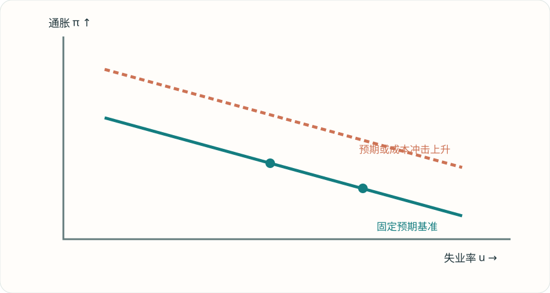
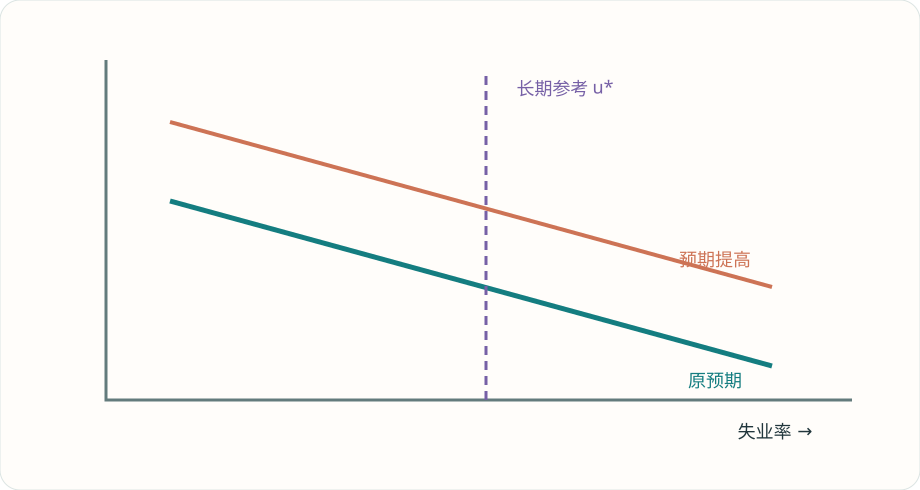

菲利普斯曲线：通胀与失业的权衡
失业率越低，通胀就必然越高吗？从预期、失业缺口与供给冲击理解条件性权衡。
为什么最初的菲利普斯曲线不能直接当作今天的通胀模型？
菲利普斯的早期研究观察的是英国名义工资变动与失业率的历史关系。后来宏观模型将其扩展为价格通胀与劳动力闲置程度的关系，加入预期、工资与供给成本机制。两者的变量和假设都不同；把一幅早期经验相关图理解成央行永远能在通胀和失业率间按固定比例选点，会错过预期与制度变化。
一个可逐项检查的预期增强式
用 π 表示当期通胀率，πᵉ 表示事前预期，u−u* 表示失业率相对自然率的缺口，κ 是给定模型中每1个百分点失业缺口对应的通胀变化，s 是独立的供给或价格成本冲击，则静态教学模型写作：
预期增强型菲利普斯关系；失业率与通胀率均以百分比的百分点单位输入，参数只在这套模型中成立。

同时改变失业、预期和供给冲击
固定自然失业率 u*=4%、斜率κ=0.8；用构造模型把不同冲击清晰分开。
为什么长期政策不可能一直依赖同一条短期曲线？
当政策持续推动失业低于某个估计的自然率，价格上行会影响雇主、工人和家庭下一期通胀预期，使短期菲利普斯曲线的位置变化。在特定长期预期充分调整且供给冲击消失的模型中，长期菲利普斯曲线趋近在 u* 的垂直参考线。但自然率本身不是不会变化的自然常数；岗位匹配、年龄结构、制度和技术进步都可能改变其估计。

降低通胀需要付出的代价为何无法直接套用历史系数
所谓牺牲率通常衡量降低通胀1个百分点时伴随的累计产出损失，具体定义、样本期与基线选择必须说明。劳动力市场调整、通胀预期是否锚定、财政配合和供给价格恢复都会改变通胀下降所需的失业或产出变化。即使一次历史紧缩伴随严重失业，也不能从中推导下一次政策的精确代价。
纽约联储对疫情时期通胀与劳动力的研究区分了暂时性供给冲击及劳动力紧张预期，美联储的进一步分析也发现统计相关会随冲击类型变化。估计所谓稳定政策菜单之前，应先说明货币政策框架、预期形成机制和数据样本。
来源与阅读
机构研究帮助解释模型与经验关系，示例曲线不对应某一国家实际数据。